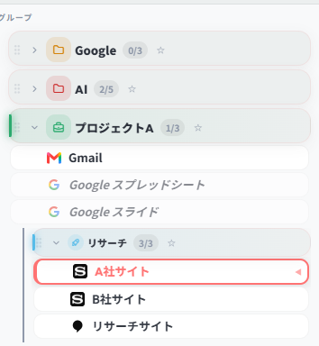
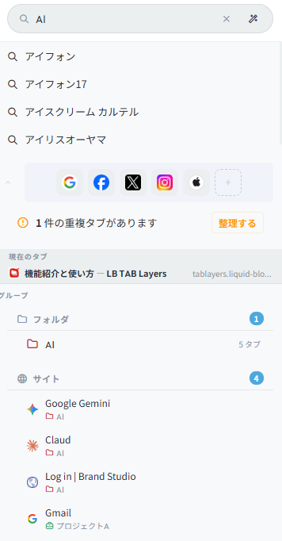
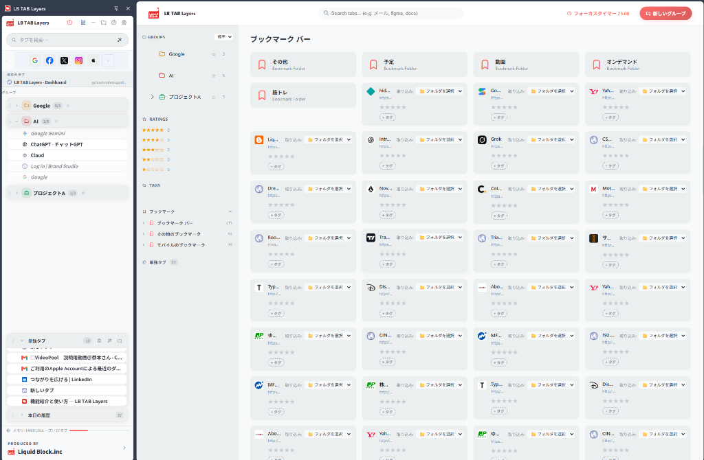

Switch work contexts with
"Layer-Based" tab organization
Organize and manage tabs as "layer groups" by project, client, or purpose (research, accounting, social media, etc.).
One-click to open all tabs in a group. When done, close them all instantly to free up memory.
- Bulk restore & bulk close multiple tabs
- Intuitive drag & drop reordering
- Full support for subgroups (nested folder hierarchy)

Never lose your data
Two-Way Auto Bookmark Sync
Unlike other tab managers, groups and tabs saved in TAB Layers are automatically synced with your browser's native bookmarks.
Even if you uninstall the extension, your browser crashes, or your PC force-restarts — your data is never lost.
- Data remains as bookmarks even after extension removal
- Two-way sync: edits in bookmarks auto-reflect in TAB Layers
- No server involved — complete privacy

Search by meaning, auto-organize
AI Assistant (Beta)
Connect Chrome's built-in AI (Gemini Nano) or your own API key (Gemini / OpenAI / Claude) to unlock advanced AI search.
Search tabs with abstract queries like "hotel options for my business trip" or "meeting materials for next week." AI can also auto-categorize and name folders for your open tabs.
- Semantic search: finds meaning beyond URLs and titles
- AI auto-grouping: one-click auto-categorization of scattered tabs
- Privacy-focused: API connections run locally

Make important things stand out
★ Star Ranking
Assign ★1–★5 importance rankings to both groups (folders) and individual tabs.
Star your critical projects or frequently referenced pages to find them instantly among dozens of groups. Sort by star rating in the dashboard for better priority management.
- ★1–★5 ranking for both groups and tabs
- Quick one-click popup picker for rank changes
- Sort & filter by star ranking in the dashboard
Available in both Side Panel and Dashboard
Find across folders
#Tag free classification
Tags fill the gap where folder hierarchy falls short.
Add multiple custom tags like #design, #reference, #needs-review to individual tabs. Filter across all folders by tag. The dashboard sidebar auto-generates a tag list — click any tag to view matching tabs instantly.
- Add/remove multiple tags per tab freely
- Tag-based filtering in the dashboard
- Tag assignment available in the bookmark organizer
Click a tag to view matching tabs across all folders
Smart full-screen organization
Bookmark classification & migration
Beyond the side panel, TAB Layers includes a dedicated "Dashboard" for full-screen overview.
View all existing browser bookmarks at a glance. Classify and migrate them to TAB Layers group folders via click or dropdown selection. Organizing overgrown bookmarks becomes dramatically faster.
- Smart bulk organization of bookmark bar and other bookmarks
- Folder selection list for quick migration to target layer folders
- Full-screen workspace for parallel organization of tabs, groups & tags
